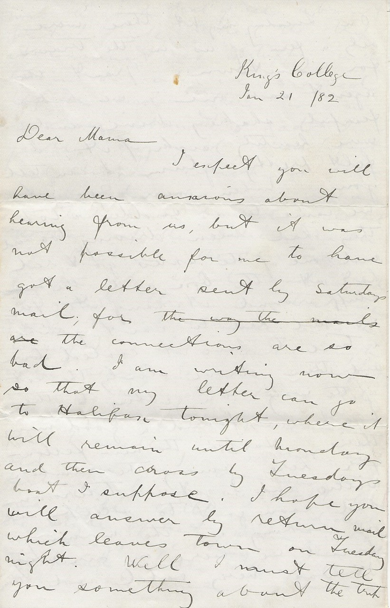

King’s College
Jan. 21 / 82
Dear Mama
I expect you will have been anxious about hearing from us, but it was not possible for me to have got a letter sent by Saturday’s mail; for the connections are so bad. I am writing now so that my letter can go to Halifax tonight, where it will remain until Monday and then cross by Tuesday’s boat I suppose. I hope you will answer by return mail which leaves town on Tuesday night.
Well I must tell you something about the trip. On Tuesday night there were only a few of us in the train for Georgetown, Grant the agent was one; we had a fearful shaking drive, and were heartily sick of it, I felt pretty glum I can tell you. When near Georgetown we came to a sudden stop they had been driving too hard and one of the axles got red hot at the box, and the stuff around it caught fire so we had to wait quite a time to have it cooled down and then drove slowly the rest of the way.
On getting to the boat we found a good many there, Harper the new fellow for here among the number: Willie and I got a stateroom and soon got to sleep, and on waking in the morning found we were on our way. It was very cold and there was a good deal of ice about but I quite liked the trip, it was not so stuffy in the cabin as when we crossed before, and there was no rocking about, and I quite enjoyed breakfast and dinner which we had on board. As there were no ladies on board, we had the use of the ladies cabin.
At Pictou the harbour was frozen up solid, and we had to cut through thick ice from the lighthouse into the wharf; we had a great laugh when nearly to the wharf at a little incident with an old man; the ice was quite safe for travelling on, and an old man was crossing the harbour; he was very short, old and quite silly; a good deal the style of that man Irving who is always getting water at the pump at the top of the square at home; this old fellow was nearly across to where we were, so to complete his journey he had to get over before we made our track along, at the same time the Mayflower was coming over from Pictou in the channel which had been kept broken so that when both steamers got to the wharf it would stop all crossing on the harbour below the town.
The old man saw this and began running to be across in time; we were ploughing up the ice and only had about the length of the steamer to go; so all hands began cheering and yelling at the little old man to look lively, and he with a huge stick hurried over, just getting on the safe side in time, the passengers then made great game of him, and he stood and watched us pass quite closely by him.
Willie went over to Pictou to see some people, but when he came back to the steamer, he thought he had better not go on in the train with me, but stop all night at Pictou, so as to see some more people; so he stopped and I have not heard from him yet. At New Glasgow we were detained a long time, for a train from Antigonish which had been stuck in the snow, so we were almost an hour late getting to Truro. Between Pictou and Truro, Welsh got quite sea sick with the motion of the train. I stopped all night at Bedford and came up here on Thursday morning feeling mighty tired with the trip, and awfully in the dumps.
I found all the fellows pretty well settled, and things going the same as ever. I have been planning my work for the term: ask Tom if he has sent for that book, I hope he sent in time for last mail; it was ‘An Examinational Directory or Guide to Matriculation in the University of London’ price 3/6. Address Rev. A.H. Killick 233 Lewisham Road, New Cross S.E.
When I got here on Thursday I found an invitation to a dance at Walter Lawson’s for that evening; I went, it was a very nice party, and there were quite a lot there they had the drawing room carpet up and the floor waxed. I enjoyed myself, but felt pretty tired all the time, and not much inclined for it.
They are under way getting up a concert for the church but I am afraid it is not going to amount to much, for a great many seem against it saying, they have not enough material for a regular concert, which is quite true I am sure, but the two Miss Dimmocks are trying to raise it: I was talking to Wilcox at the party; he says he did not like to give Willie any encouragement in his letter because there is such fooling among the committee, but he will do all he can for him. They are a set of miserable humbugs I believe, they have been having meetings about it, and have chosen a committee for building a new church, one member of which does not go to church more than two or three times a year.
The ladies are working well for it, and have got all the money that is raised (except the Insurance which is about $950) They are very sensibly holding the money until enough is raised by other means to put up the church, and their fund will be given toward inside finishing. The men have not raised any money yet, and I think they are doing nothing but disputing where the new church is to be built, instead of giving the money to build it. Wilson said it was Mr. Ambrose who had promised Mr. Maynard the plans, but that was a long while ago, and it is doubtful whether they are to be got now. The Presbyterians are going to build a new church here and I expect they will want to spend a good deal of money on it, for the one they have now is a good one, so I will try and get Willie on the track for that.
With kisses to the youngsters and love to all I remain your loving son E.A.H.
P.S.
Let me know after Sarah has been at the rink Keep her up to it. I could go with her now. Remember me to our neighbours.